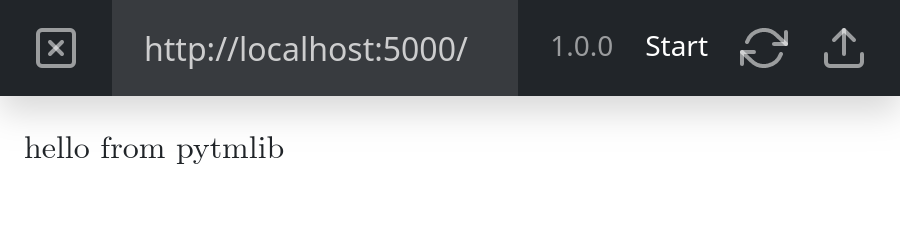
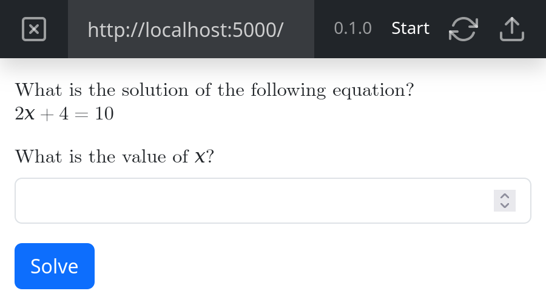
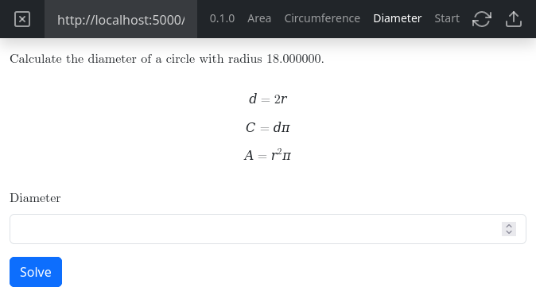
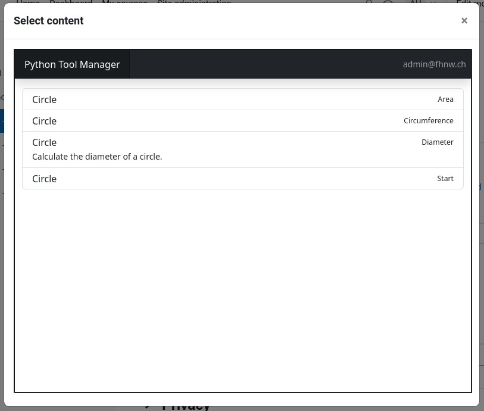

User’s Guide¶
This page should give you guidance to create your first exercises. The examples on this page are also available in a separate repository on GitHub. Feel free to check it out and play around.
First Exercise¶
After successful installation of this library you can start creating your first exercise. Open your
Python project folder (where your virtual environment folder is located) in your
favourite IDE and create a new file named app.py with the following content:
from pytmlib import AbstractExercise
from pytmlib import entrypoint
class Exercise(AbstractExercise):
@property
def version(self) -> str:
return '0.1.0'
@entrypoint
def start(self):
return self.output.add_paragraph('hello from pytmlib')
app = Exercise()
The version property defines the current version of your
exercise. Use semantic versioning according to the specification.
The start method with the
entrypoint decorator defines the entrypoint of your exercise. This method will
be executed, when your exercise starts.
Now, open a new console window, navigate to the python project folder, activate the virtual environment and execute the following command:
flask --debug run
Open the Python Tool Manager and create a new exercise. Start the preview mode, and you should see the following:

In order to upload your exercise, you need to create a Dockerfile
at the same level as your app.py file is located and add the following content:
FROM python:3.9
WORKDIR /app
COPY . .
RUN pip install --no-cache-dir -r requirements.txt && \
pip install --no-cache-dir gunicorn
CMD gunicorn --bind='0.0.0.0:8080' app:app
Now you can upload your first exercise.
Add Input Fields¶
In order to create a dynamic exercise, we need to allow the user to enter data and send it to the exercise Python code.
So replace the app.py file of your first exercise from the example above with the following code:
from pytmlib import AbstractExercise
from pytmlib import Latex
from pytmlib import entrypoint
class Exercise(AbstractExercise):
@property
def version(self) -> str:
return '0.1.0'
@entrypoint
def start(self):
question = Latex(r'''
What is the solution of the following equation?
\newline
$$2x + 4 = 10$$
''')
label = Latex(r'What is the value of $x$?')
return self.output \
.add_paragraph(question) \
.add_number_field(name='answer', label=label) \
.add_action('Solve', self.solve)
def solve(self, answer):
correct = 'right' if self.check(answer) else 'wrong'
return self.output \
.add_paragraph(f'Your answer {answer} is: {correct}') \
.add_action('Back to start', self.start)
@classmethod
def check(cls, answer):
return answer == 3
app = Exercise()
The number field has the name answer. The same identifier occurs as parameter in the solve method. Field name and
method parameter name have to match in order to use the field’s value inside an action. An action is equal to a method
invocation and is represented by a blue button in the user interface:

To control what method is executed after a click on the button, you need to pass a method reference in the invocation of
add_action. You can also pass additional values using keyword
parameters. See the next chapter for more information on passing parameters.
Use Dynamic Values¶
An exercise with fixed values is not very interesting and fun to solve. Therefore, we need to introduce dynamic values:
from random import randint
from pytmlib import AbstractExercise
from pytmlib import Latex
from pytmlib import entrypoint
class Exercise(AbstractExercise):
_epsilon = 0.01
@property
def version(self) -> str:
return '0.1.0'
@entrypoint
def start(self):
y = randint(0, 100)
b = randint(1, 100)
m = randint(2, 100)
question = Latex(r'''
What is the solution of the following equation?
\newline
${m}x + {b} = {y}$
'''.format(m=m, b=b, y=y))
label = Latex(r'''
What is the value of $x$ (with a precision of {e})?
'''.format(e=self._epsilon))
return self.output \
.add_paragraph(question) \
.add_number_field(name='x',
label=label,
step=self._epsilon) \
.add_action('Solve', self.solve, m=m, b=b, y=y)
def solve(self, x, **kwargs):
correct = 'right' if self.check(x, **kwargs) else 'wrong'
return self.output \
.add_paragraph(f'Your answer {x} is: {correct}') \
.add_action('Back to start', self.start)
@classmethod
def check(cls, answer, m, b, y):
x = (y - b) / m
diff = abs(answer - x)
return diff < cls._epsilon
app = Exercise()
As we can see in this slightly advanced version of the second example exercise, the solve method has
now three additional parameters namely m,b and y. The values of these parameters are generated in the start
method and passed as keyword arguments in the invocation of
add_action.
Warning
Keep the following points in mind when passing values from one action to the next:
All parameters need to be serializeable.
Only pass primitives, tuples, dictonaries or lists.
Don’t pass objects like e.g. matplotlib figures.
Don’t pass secret values.
Submit the Score¶
All what’s left now is to send a grade to the connected LMS:
from random import randint
from pytmlib import AbstractExercise
from pytmlib import Latex
from pytmlib import entrypoint
class Exercise(AbstractExercise):
_epsilon = 0.01
@property
def version(self) -> str:
return '0.1.0'
@entrypoint
def start(self):
m_1 = randint(2, 5)
b_1 = randint(1, 10)
m_2 = randint(6, 10)
b_2 = randint(1, 10)
line_1 = r'$$f_{1}(x) = \frac{x}{%d} + {%d}$$' % (m_1, b_1)
line_2 = r'$$f_{2}(x) = \frac{x}{%d} + {%d}$$' % (m_2, b_2)
question = Latex(r'''
What is the intersection point $(x,y)$ of the two lines?
\newline
{line1}
{line2}
'''.format(line1=line_1, line2=line_2))
label_x = Latex(r'''
What is the value of $x$ (with a precision of {e})?
'''.format(e=self._epsilon))
label_y = Latex(r'''
What is the value of $y$ (with a precision of {e})?
'''.format(e=self._epsilon))
return self.output \
.add_paragraph(question) \
.add_number_field(name='x',
label=label_x,
step=self._epsilon) \
.add_number_field(name='y',
label=label_y,
step=self._epsilon) \
.add_action('Solve', self.solve,
m_1=m_1,
b_1=b_1,
m_2=m_2,
b_2=b_2)
def solve(self, **kwargs):
score = self.check(**kwargs)
return self.output \
.add_score(score) \
.add_paragraph(f'Your score: {score}') \
.add_action('Back to start', self.start)
@classmethod
def check(cls, x, y, m_1, b_1, m_2, b_2):
x_correct = (b_2 - b_1) / (1 / m_1 - 1 / m_2)
y_correct = x_correct / m_1 + b_1
x_diff = abs(x - x_correct)
y_diff = abs(y - y_correct)
score = 0.0
if x_diff < cls._epsilon:
score += 0.5
if y_diff < cls._epsilon:
score += 0.5
return score
app = Exercise()
We can transmit a score by invoking the add_score method on the
OutputBuilder instance.
Warning
The invocation of add_score must happen inside the methods
return statement. Otherwise, the grade will not be sent to the LMS.
The score is a float value between 0.0 and 1.0. Where 0.0 is the lowest and 1.0 the highest achievable grade.
Display a Plot¶
from collections import namedtuple
from math import sqrt
from random import randint
from matplotlib.figure import Figure
from matplotlib.patches import Polygon
from pytmlib import AbstractExercise
from pytmlib import Latex
from pytmlib import entrypoint
Triangle = namedtuple('Triangle', 'a_x a_y b_x b_y c_x c_y')
class Exercise(AbstractExercise):
_epsilon = 0.01
@property
def version(self) -> str:
return '0.1.0'
@entrypoint
def start(self):
a_x = randint(1, 9)
a_y = randint(1, 9)
b_x = randint(11, 19)
b_y = randint(11, 19)
c_x = randint(11, 19)
c_y = randint(1, 9)
triangle = Triangle(a_x, a_y, b_x, b_y, c_x, c_y)
figure = self._get_figure(*triangle)
question = Latex(r'''
What is the magnitude of the following vectors?
Answer the question with a precision of {e}.
'''.format(e=self._epsilon))
return self.output \
.add_paragraph(question) \
.add_figure(figure) \
.add_number_field(name='a_b',
label=Latex(r'''
$\lvert \overrightarrow{AB} \rvert$
'''),
step=self._epsilon) \
.add_number_field(name='b_c',
label=Latex(r'''
$\lvert \overrightarrow{BC} \rvert$
'''),
step=self._epsilon) \
.add_number_field(name='a_c',
label=Latex(r'''
$\lvert \overrightarrow{AC} \rvert$
'''),
step=self._epsilon) \
.add_action('Solve', self.solve, **triangle._asdict())
def solve(self, **kwargs):
score = self.check(**kwargs)
return self.output \
.add_score(score) \
.add_paragraph(f'Your score: {score}') \
.add_action('Back to start', self.start)
@classmethod
def check(cls, a_b, b_c, a_c, a_x, a_y, b_x, b_y, c_x, c_y):
scores = iter([0.0, 0.2, 0.5, 1.0])
score = next(scores)
edges = [
[a_b, a_x, a_y, b_x, b_y],
[b_c, b_x, b_y, c_x, c_y],
[a_c, a_x, a_y, c_x, c_y]
]
for points in edges:
answer, *points = points
length = cls._magnitude(*points)
diff = abs(length - answer)
if diff < cls._epsilon:
score = next(scores)
return score
@staticmethod
def _get_figure(a_x, a_y, b_x, b_y, c_x, c_y):
figure = Figure()
plot = figure.add_subplot(1, 1, 1)
p_a = [a_x, a_y]
p_b = [b_x, b_y]
p_c = [c_x, c_y]
triangle = Polygon(xy=[p_a, p_b, p_c],
lw=1.5,
edgecolor='red',
facecolor='white',
axes=plot)
plot.add_patch(triangle)
plot.text(a_x, a_y, 'A', ha='center', va='center', size=16)
plot.text(b_x, b_y, 'B', ha='center', va='center', size=16)
plot.text(c_x, c_y, 'C', ha='center', va='center', size=16)
min_x = min(a_x, b_x, c_x) - 1
min_y = min(a_y, b_y, c_y) - 1
max_x = max(a_x, b_x, c_x) + 1
max_y = max(a_y, b_y, c_y) + 1
plot.set_xlim(min_x, max_x)
plot.set_ylim(min_y, max_y)
plot.grid(True, 'both', ls='--', lw=0.5)
x_ticks = range(min_x, max_x)
y_ticks = range(min_y, max_y)
plot.set_xticks(x_ticks)
plot.set_yticks(y_ticks)
figure.tight_layout()
return figure
@staticmethod
def _magnitude(x0, y0, x1, y1):
x = x1 - x0
y = y1 - y0
return sqrt(x * x + y * y)
app = Exercise()
Use Entrypoints¶
Entrypoints allow you to create multiple exercises inside the same exercise class. This enables you to share code
between exercises. The following example illustrates the use of multiple
entrypoint decorators:
from enum import StrEnum
from math import pi
from random import randint
from pytmlib import AbstractExercise
from pytmlib import entrypoint
class Circle(StrEnum):
DIAMETER = 'diameter'
CIRCUMFERENCE = 'circumference'
AREA = 'area'
class Exercise(AbstractExercise):
_operations = {
Circle.DIAMETER.value: lambda r: r * 2,
Circle.CIRCUMFERENCE.value: lambda r: r * 2 * pi,
Circle.AREA.value: lambda r: r * r * pi
}
_epsilon = 0.01
_hint = r'''
$$d = 2r$$
$$C = d\pi$$
$$A = r^{2}\pi$$
'''
@property
def version(self) -> str:
return '0.1.0'
@entrypoint('Overview')
def start(self):
return self.output \
.add_action('Diameter', self.diameter) \
.add_action('Circumference', self.circumference) \
.add_action('Area', self.area)
@entrypoint
def diameter(self):
"""
Calculate the diameter of a circle.
"""
radius = randint(1, 100)
return self.output \
.add_latex(r'''
Calculate the diameter of a circle with radius %f.
''' % radius) \
.add_latex(self._hint) \
.add_number_field(name=Circle.DIAMETER,
label='Diameter',
step=self._epsilon) \
.add_action('Solve', self.solve, radius=radius)
@entrypoint
def circumference(self):
radius = randint(1, 100)
return self.output \
.add_latex(r'''
Calculate the circumference of a circle with radius %f.
''' % radius) \
.add_latex(self._hint) \
.add_number_field(name=Circle.CIRCUMFERENCE,
label='Circumference',
step=self._epsilon) \
.add_action('Solve', self.solve, radius=radius)
@entrypoint
def area(self):
radius = randint(1, 100)
return self.output \
.add_latex(r'''
Calculate the area of a circle with radius %f.
''' % radius) \
.add_latex(self._hint) \
.add_number_field(name=Circle.AREA,
label='Area',
step=self._epsilon) \
.add_action('Solve', self.solve, radius=radius)
def solve(self, **kwargs):
score = 1.0 if self.check(**kwargs) else 0.0
_ = kwargs.pop('radius')
attribute, _ = kwargs.popitem()
method = getattr(self, attribute, self.start)
return self.output \
.add_score(score) \
.add_paragraph(f'Your score: {score}') \
.add_action('Back', method)
@classmethod
def check(cls, radius, **kwargs):
attribute, value = kwargs.popitem()
if attribute not in cls._operations:
return False
operation = cls._operations.get(attribute)
return abs(operation(radius) - value) < cls._epsilon
app = Exercise()
You can switch between the entrypoints in the preview mode:

The content selection dialog in the LMS displays the available entrypoints:

Add a doc string to an entrypoint method to give some additional description of the exercise:
@entrypoint
def diameter(self):
"""
Calculate the diameter of a circle.
"""
...
You can also change the title of an entrypoint by passing a parameter:
@entrypoint('Bar')
def foo(self):
...
Warning
Don’t ever change the name of an entrypoint, which is already in use. Otherwise the LMS will loose access to it.
Write Tests¶
This guide uses unittest, the built-in unit test framework of the
Python standard library, because of its simplicity. This way, we don’t have to introduce any additional dependency to
the project, and we can start writing unit tests right away. To write a first unit test, create a new file
named test.py next to the venv folder. We will write a test for the previous example exercise:
from unittest import TestCase
from app import Exercise
class Test(TestCase):
def test_magnitude_calculation(self):
assert Exercise._magnitude(0, 0, 1, 0) == 1
assert Exercise._magnitude(0, 0, 2, 0) == 2
assert Exercise._magnitude(1, 1, 1, 5) == 4
assert Exercise._magnitude(-1, -2, 3, 5) - 8.062 < 0.1
def test_check_with_all_wrong_magnitudes(self):
assert Exercise.check(a_b=1, b_c=2, a_c=3,
a_x=1, a_y=1,
b_x=3, b_y=3,
c_x=2, c_y=1) == 0.0
def test_check_with_one_correct_magnitude(self):
assert Exercise.check(a_b=16.55, b_c=2, a_c=3,
a_x=4, a_y=8,
b_x=19, b_y=15,
c_x=16, c_y=4) == 0.2
def test_check_with_two_correct_magnitudes(self):
assert Exercise.check(a_b=13.453, b_c=2, a_c=6,
a_x=7, a_y=3,
b_x=16, b_y=13,
c_x=13, c_y=3) == 0.5
def test_check_with_all_correct_magnitudes(self):
assert Exercise.check(a_b=17.029, b_c=10.198, a_c=11.045,
a_x=5, a_y=5,
b_x=18, b_y=16,
c_x=16, c_y=6) == 1.0
To execute the tests, activate the virtual environment in a new console window and execute the following command:
python -m unittest
You should observe the following output:
.....
--------------------------------------------------------------------
Ran 5 tests in 0.000s
OK